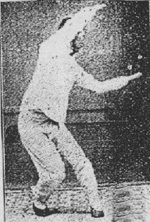

三大派系
（中国拳术发展到明朝戚继光时出现了两大系统： 《八卦拳学》插图 《八卦拳学》插图 长拳系[10]（古拳系）：北拳，包括跳跃，翻跟斗，大车身等动作。因要重复单势操练，故称长拳。宋朝已经发展成熟，多以单势操练至熟稔为止。至明时加入红拳，炮锤，华拳等元素。形拳系（少林拳系）：（红拳、炮锤、华拳加上长拳），明朝以后，取动物捕食时之姿态及风雷雨电之急势，衍生出北方六合拳、罗汉短打及南方五形洪拳。拳种包括福建《五拳》、《华拳》、山西《六合拳》等。[11]（南拳）——开始有比较完整之训练系统。先练习肌肉、关节及运气与用劲。注重坐马步法，手法保护身体，两手协调互动。 往后至清朝初期，混合以上两大系统发展成意拳系。 意拳系（新拳系-内家拳系及新派南拳）：简化了形拳系之重复练习形式．减去了长拳系之烦琐困难动作。改良了一些对身体造成偒害之硬著头皮方式之练习形式。于是门派开始形成。乾隆时盛行之太极拳是由简化了之长拳系拳术加上了五行八卦等意念构成，同期之形意拳则以形拳会意而成。 混合以上三大系统演衍出 现代拳系：咏春拳、大成拳、截拳道、北派通背拳及现称武当、峨眉之各流派。